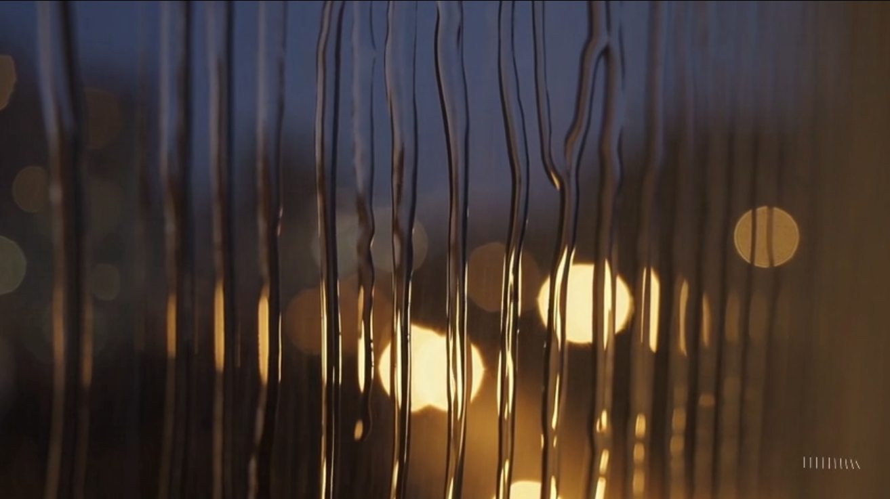

🔄 Sora Loop 기능 마스터하기
영상 클립이 끊김 없이 무한 반복되도록 만드는 'Loop' 기능을 배워보세요. SNS 움짤이나 웹 배경 영상 제작에 매우 유용한 강력한 도구입니다.
Loop 기능이란?
Loop는 영상의 끝부분과 시작 부분을 AI가 분석하여, 두 지점이 매끄럽게 연결되도록 만들어주는 기능입니다. 지정한 구간이 시작과 끝의 구분 없이 계속 순환하는 것처럼 보이게 됩니다.
주요 특징
- 핵심: 영상의 특정 구간을 '무한 반복' 가능하게 만듦
- 장점: SNS, 웹디자인 등에서 활용도가 높은 짧고 반복적인 영상 제작
- 원리: 마지막 프레임과 첫 프레임이 자연스럽게 이어지도록 중간 과정을 미세 조정
- 활용: Cinemagraph, Animated GIF, 웹 배경 영상 등
실습 예제: 끝없이 내리는 빗방울 장면
미션: 끝없이 내리는 빗방울 장면 만들기
특정 움직임이 끊김 없이 자연스럽게 반복되는 과정을 직접 확인해보세요.
1단계: 기준 영상 생성
먼저, 루프를 적용할 원본 영상을 생성합니다. 이 영상은 재생이 끝나면 멈춥니다.
"Raindrops streaming down a window pane, with a blurry city view in the background, cozy atmosphere."

2-3단계: Loop 적용 및 결과
생성된 영상에서 Loop 버튼을 클릭하고, 빗방울의 움직임이 가장 일정한 2~3초 구간을 선택합니다.
Sora가 해당 구간의 시작과 끝을 자연스럽게 연결하여, 마치 비가 영원히 내리는 듯한 '무한 반복' 영상이 완성됩니다.
결과: 끊김 없이 계속 비가 내리는 장면
주의사항 및 PRO-TIP
⚠️ 주의사항
- 일관된 움직임을 가진 구간 선택: 가장 중요한 포인트입니다. 피사체의 움직임이 시작과 끝에서 비슷한 구간을 선택해야 자연스러운 결과물을 얻을 수 있습니다.
- 급격한 변화가 있는 구간은 피하기: 카메라가 갑자기 움직이거나 새로운 피사체가 등장하는 등 급격한 변화가 있는 구간은 적합하지 않습니다.
- 적절한 구간 길이: 너무 긴 구간은 연결점을 찾기 어려우므로 1~3초 정도의 적절한 길이를 선택하세요.
💡 PRO-TIP
- 반복적 움직임 활용: 계속해서 흔들리는 나뭇잎, 잔잔하게 물결치는 수면 등 자연스럽게 반복되는 움직임을 찾아보세요.
- 루프 의도 명시: 처음부터 루프 영상을 만들 목적이라면 프롬프트에 'seamless loop' 등을 포함해보세요.
- 짧게 시작하기: 처음 연습할 때는 1~2초 정도의 짧은 구간으로 시작해서 점차 늘려가세요.
- 품질 확인: 생성된 루프 영상을 여러 번 반복 재생해보며 연결 부분이 자연스러운지 확인하세요.